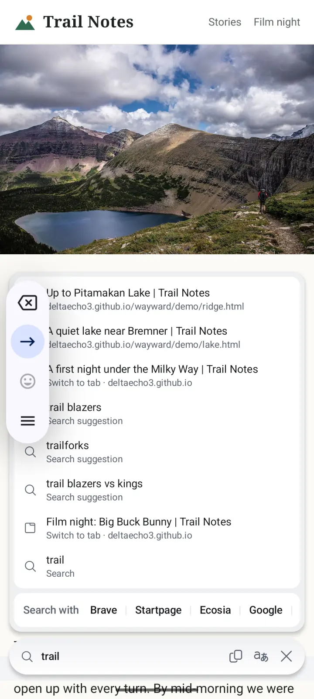
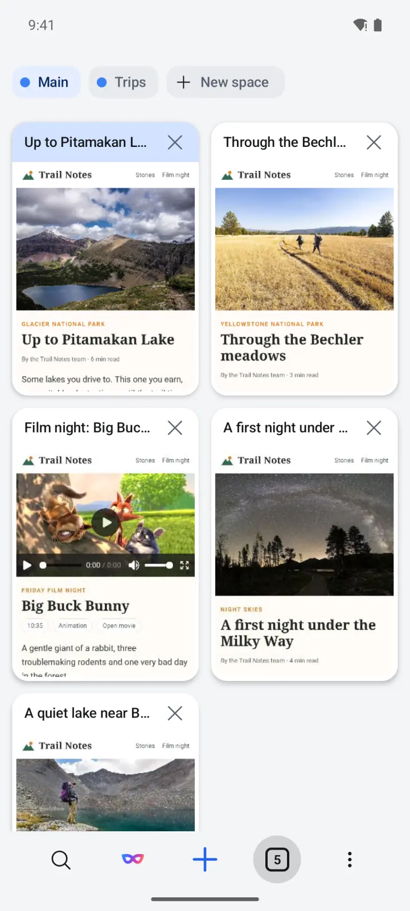
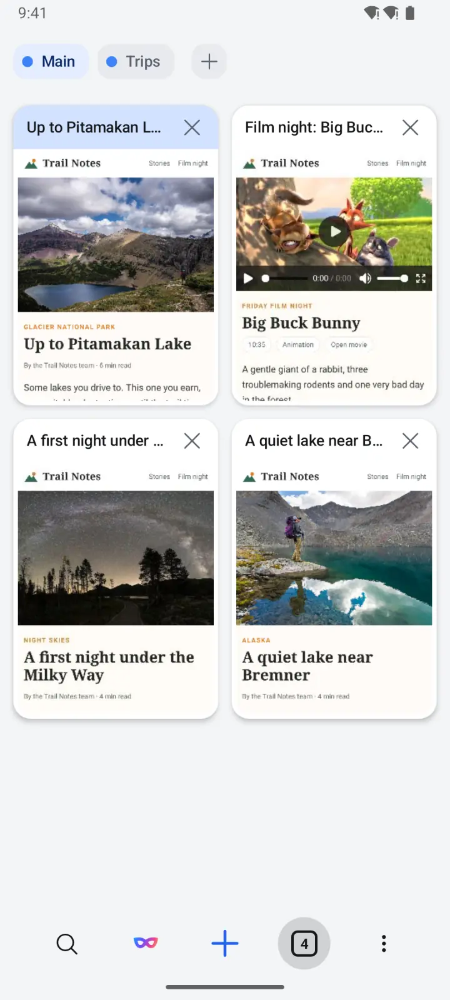

Search, keep a few tabs open, and find your way home
Walkthrough
Try searching for a hike, opening several results to compare, saving the best one and returning to the start page.
1. Start from the start page
Open Wayward. A new tab shows the start page, with your shortcuts, the week's blocked count and your other tabs.

2. Search
Tap the address bar at the bottom (Search or type an address) and type "lake trail". Suggestions come up as you type: the first row searches for exactly what you typed (Search), and others come from your open tabs, bookmarks, history and your search engine. Tap the first one.

3. Open a few results without losing your place
On the results page, hold a result's link. In the menu that opens, tap Open in background tab. It loads behind the page you're on, and the number on the Tabs button goes up. Do the same for two or three more results.


4. Compare them
Tap the Tabs button (the square with the number). Each result has its own card with a picture of the page. Tap a card to read that page. Tap the Tabs button again to go back to the cards, and close the ones you don't want with their X or a sideways swipe. If you close one by mistake, tap Undo.

5. Keep the best one
On the page you like, tap the star on the bar (TalkBack: Bookmark). It's in your bookmarks now, under the ⋮ menu's Bookmarks.
6. Go home, and back
Tap the house on the bar (TalkBack: Home). The start page shows over the page you were on. Press Back and you're on that page again.
To reload a page, pull it down from the very top and let go.
7. Quick moves from the Tabs button
Hold the Tabs button for shortcuts: New tab, New private tab and Close tab, and Switch to tabs when you're in a private tab. With more than one space, it also lists each other space to go to.

Next time
Close Wayward whenever you like. Your regular tabs are still there when you open it again, ready where you left them, unless you turned on Delete everything when Wayward closes or left with Exit Wayward. To make the start page yours, see use the start page. For more on tabs, see open, find and close tabs.
More in Browsing
- Search or go to an address
- Copy, paste or share a page's address
- Scan a QR code
- Change your search engine, and search one site directly
- Open, find and close tabs
- Pin, rename or pick several tabs
- Group your tabs
- Use the start page
- Find words on a page
- Translate a page
- Read an article without the clutter
- Desktop site, zoom, print and save as PDF
- Hold a link, picture or video for more
- When a page asks you something
- Find a page in your history, or clear it
- Bookmarks, folders, import and export
- Links from other apps, and link previews
- The widget and home-screen shortcuts
- Sign in with your password manager